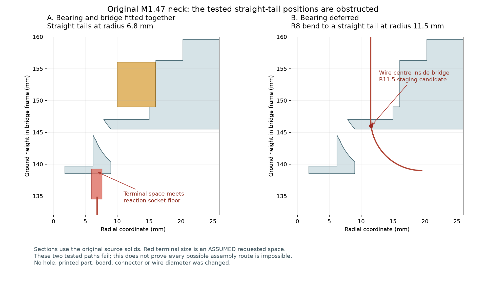

这是装配顺序检查的失败结果，主模型没有修改。当前四线排布遇到上下错开的可通过范围；延后安装轴承也没有使本次测试的路线通过。中心小孔仍存在，并非桥座完全封闭。

这些结果只排除所试路径，不证明其他装法不可能。实际端子仍有尺寸未知项。
此前PH带线插接阶段的连续检查结果保留；它使用独立通道候选，后续穿颈和头部装入还未衔接。H01/H04后装、其余跨关节线/FFC、固定、手部工具及制作图继续待处理。
4根CAM名义全长、14根身体导线、29个插头空间与原尺寸保持；没有因失败而增加开孔或改小配件。没有发布制造图。